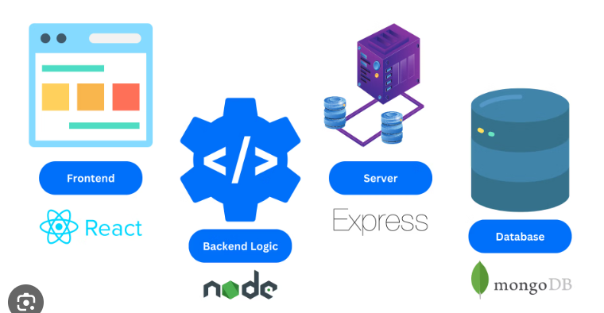
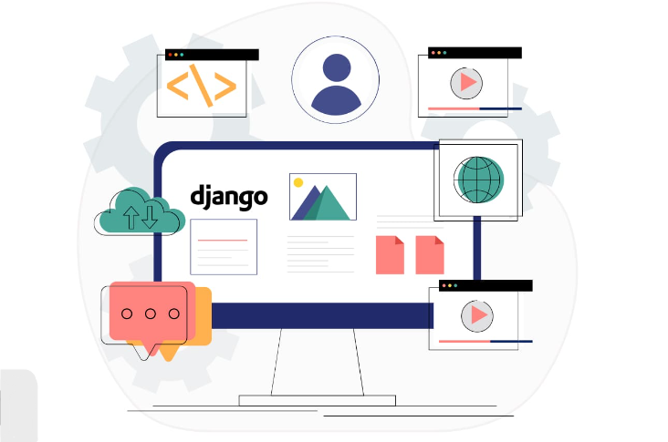
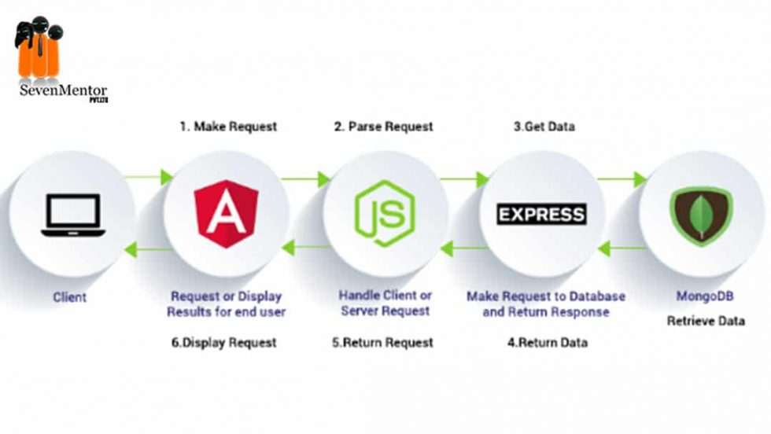

MERN Stack :
MERN Stack stands for MongoDB, Express, React, Node,
after the four key technologies that make up the stack. MongoDB — document database.
- When it comes to full stack frameworks, Node JS and Express.js are two of the most popular choices.
- Node JS is a JavaScript runtime environment that enables you to run JavaScript on the server side.
- Express.jsis a web application framework that runs on top of Node JS and provides robust features for building web applications.
- React JS is a frontend framework.

Together, these two technologies also make up the MERN stack, which is a popular choice for full stack development.
Some of the benefits of using the MERN stack include the following:
- The ability to develop applications quickly and easily using JavaScript.
- A large and active community of developers
- A rich set of features and libraries
- Good performance and scalability
Django Stack :
Django Stands for JavaScript - Python - Django - MySQL
This makes web development rapid, while making use of one of the most popular programming languages in the world, Python.

-
Django is one of the best frameworks for full stack web development that helps developers quickly create web applications
without worrying about low-level details such as managing databases or creating HTML templates.
-
Django includes several features that are essential for modern Web Development training, including an object-relational mapper (ORM)
for interacting with databases, a template engine for creating HTML views, and a wide variety of tools and libraries for common tasks.
-
In addition, Django is highly scalable, making it an ideal choice for large-scale applications.
-
While there are many full-stack developer frameworks to choose from, Django is one of the most popular and widely used.
-
As a result, it has a large and active community of users and developers who can provide support and advice.
MEAN Stack :
MEAN Stack stands for MongoDB, Express, Angulr JS, Node,
after the four key technologies that make up the stack. MongoDB — document database.
- When it comes to full stack frameworks, Node JS and Express.js are two of the most popular choices.
- Node JS is a JavaScript runtime environment that enables you to run JavaScript on the server side.
- Express.jsis a web application framework that runs on top of Node JS and provides robust features for building web applications.
- Angular JS is a frontend framework.

Together, these two technologies also make up the MEAN stack, which is a popular choice for full stack development.
Some of the benefits of using the MEAN stack include the following:
- The ability to develop applications quickly and easily using JavaScript.
- A large and active community of developers
- A rich set of features and libraries
- Good performance and scalability